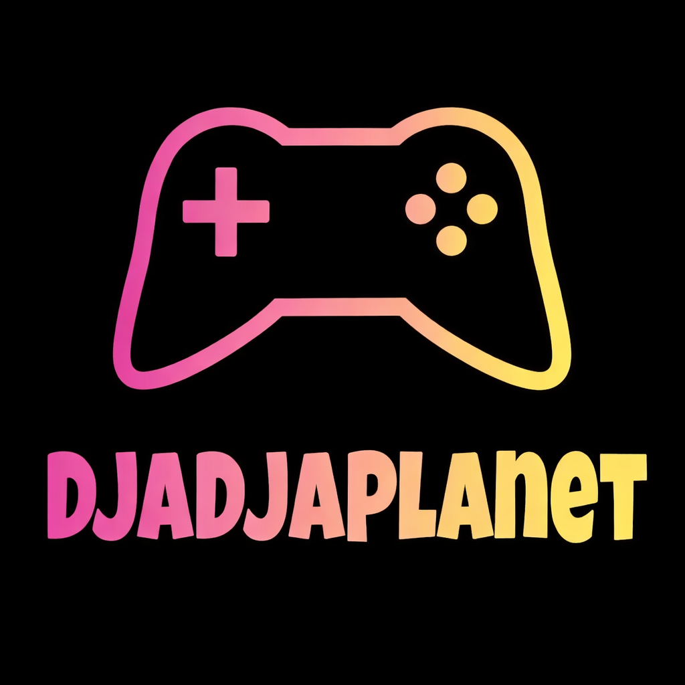

Djadja Planet – Expérience de jeu stylisée

Vision du projet
Djadja Planet est une expérience de jeu stylisée
axée sur le game feel, la lisibilité du mouvement
et l’expressivité des animations.
Le joueur incarne un personnage vivant et réactif évoluant dans un
univers coloré et affirmé, où chaque action est pensée pour être
intuitive, fluide et gratifiante.
Au-delà de l’aspect ludique, le jeu propose une approche
pédagogique subtile :
amener le joueur à comprendre et intégrer les principes du
tri sélectif par le jeu, sans jamais rompre le rythme
ni l’immersion.
Démo jouable
Une version jouable est disponible en ligne et permet d’expérimenter
directement le cœur du gameplay.
La démo met en avant les déplacements, le système d’animations
et la mécanique centrale dans une situation de jeu concrète.
👉
Jouer à la démo sur itch.io
Mécanique centrale
Le gameplay repose sur une boucle simple en apparence, mais
finement travaillée.
Le joueur explore librement l’environnement, optimise ses trajectoires
et gère son rythme de déplacement.
Lorsqu’un déchet est récupéré, il doit être analysé puis déposé dans la
poubelle correspondante.
Cette interaction clé s’effectue via un saut contextuel,
déclenchant une animation dédiée, synchronisée avec précision
entre l’input joueur, la physique et le feedback visuel.
Le tri devient alors un acte de jeu à part entière,
lisible, satisfaisant et mémorable.
Intentions de design
Les mécaniques sont volontairement épurées afin de concentrer
l’expérience sur le polish, la cohérence visuelle
et la qualité des sensations.
Chaque animation, transition et timing est pensé pour renforcer
le sentiment de maîtrise et de contrôle.
L’objectif est de créer une expérience où le joueur apprend,
expérimente et progresse sans jamais avoir l’impression
d’être guidé, en intégrant naturellement les règles
du tri sélectif par l’action et la répétition.
Défis techniques
-
Conception d’un système d’animations expressif
(idle, déplacement, course, saut contextuel).
-
Synchronisation fine entre logique de gameplay,
animations et feedbacks visuels.
-
Maintien d’un contrôle précis et réactif tout en conservant
une forte lisibilité des actions à l’écran.
-
Construction d’une boucle de jeu pédagogique intégrée
naturellement au flow du joueur.
Ressources et outils utilisés
-
Unity – Développement du gameplay,
gestion des déplacements, des interactions et du flow joueur.
-
Animator Controller – Création d’un
graphe d’états complexe assurant des transitions fluides
et cohérentes.
-
Direction artistique – Recherche visuelle,
palette de couleurs et identité forte au service de la lisibilité
et de l’immersion.